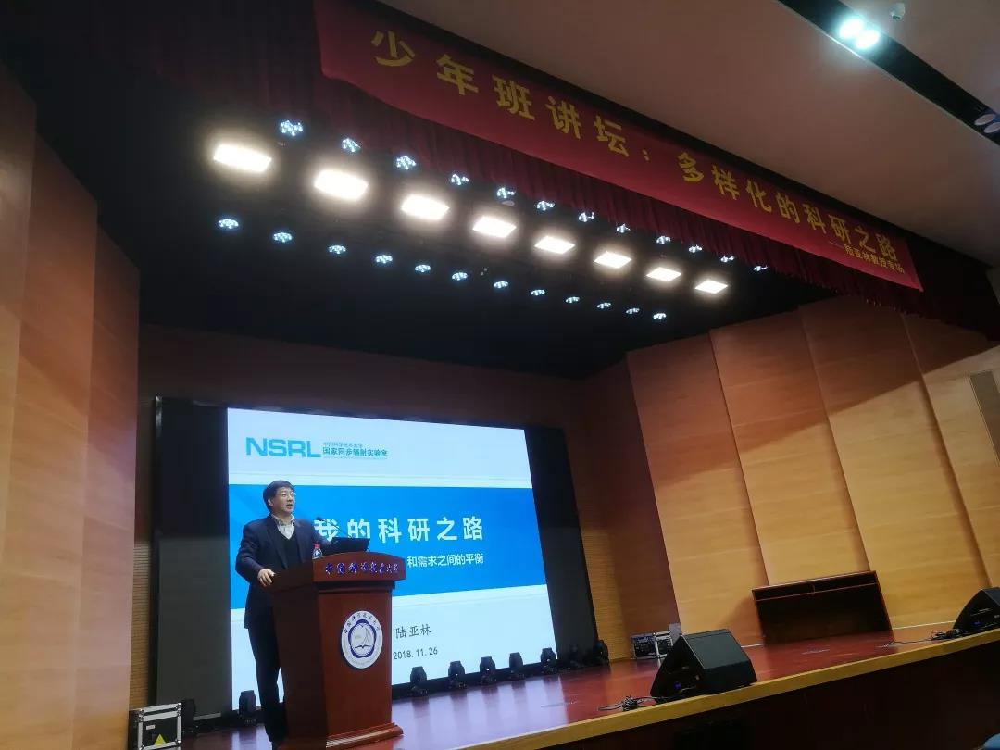
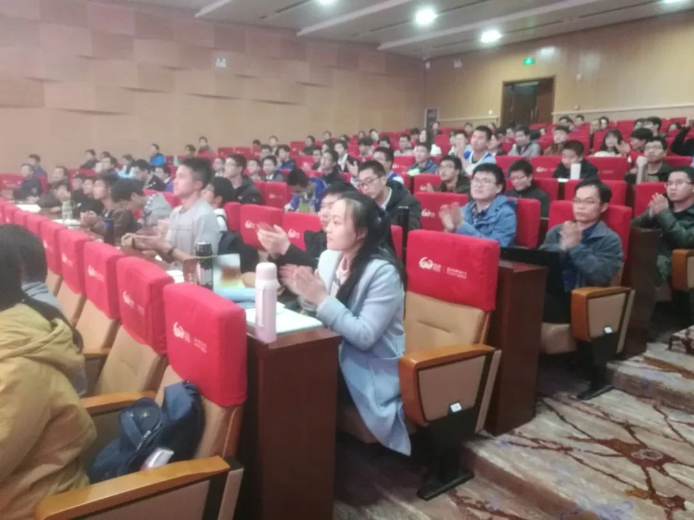

发布时间:2018-11-29 中国科大少年班学院学生会
多样化的科研之路——记陆亚林博士报告

2018年11月26日，国家同步辐射实验室主任陆亚林博士在水上报告厅作了一场精彩绝伦的报告。报告主题为“多样化的科研之路”，围绕陆亚林博士的个人经历展开，重点讲解了如何在生存、兴趣和需求之间寻找平衡。报告深入浅出，向同学们展现了一位科研工作者的真实生活，引起了在场同学的深刻共鸣。
需求的故事——合肥光源
报告伊始，陆亚林博士向听众们简要介绍了自己，包括留学、工作、创业、科研等方面，其中最引人注意的就是“合肥光源（HLS）”工程。“合肥光源（HLS）”的发展历程充满曲折与艰辛，陆博士谈起来不免感慨万千。
1983-2012年是合肥光源一期工程阶段，而进入21世纪，HLS-Ⅰ已不能满足科研需求。2010年，在科研资金不足的情况下，科大联合科学院设立改造项目，注资1.65亿元，终于在2018年7月20日完成验收，25日投入恒流运行模式，性能大大提高。
随后，陆博士简要介绍了HLS-Ⅱ的基本组成及同步辐射的发展历史和工作原理，展示了同步辐射的高纯净、高功率、高度准直性等多种优良特性，以及它作为大型科学平台对其他学科研究的重要意义。
然而，想要拥有如此先进的科学设备，无疑需要广大科学工作者付出艰苦努力。早在20世纪60年代，西方科学家就已经开始了对同步辐射的研究和制造。彼时，第一代辐射光源还处于“寄生模式”，即作为高能物理研究的副产品而存在。经过我国科学家的艰苦攻关，1984年，应用专用储存环模式的第二代辐射光源在合肥诞生了。拥有800MeV能量和150nm·rad的HLS与美欧设备相比尚有差距，但已经是我国了不起的科学成就。

兴趣的故事
从美国材料基因组工程计划谈起，陆亚林博士将他的材料科学梦娓娓道来。
在美国留学期间，陆博士曾参与非线性近场微波显微镜的研发工作。1997年，他的研究成果被刊发在《Science》杂志上，其产业化成果被世界各个实验室广泛使用。这次成功经历也某种程度上让他与同步辐射光源结下不解之缘。
随后，陆博士简要介绍了他走过的科研之路，这其中既有成功与荣誉，也有遗憾与辛酸。
他曾投身于透明电光陶瓷的研究，最早发现PMN-PT单晶薄膜中的电光效应，也催生发明了PMN-PT透明电光陶瓷。这种新型材料具有种种优良性能，拥有广阔市场，拿到研发资金，是陆博士颇为自豪的创业经历。
20世纪90年代回国后，陆博士带领他的实验室开拓了复合多参量量子功能材料体系。他耐住寂寞，不慕名利，苦心钻研，短短数年间，制造出最好的单向磁电耦合材料、最好的单向交换偏置材料、新型光催化剂等多种世界领先的优良材料。他关于介电体超晶格材料的研究，荣获国家自然科学一等奖。

活动主持人 王姝妍同学
生存的故事
就在陆博士认为自己将终生投身于材料科学工作时，他的生活突然发生了巨大转变。
从美国回国后，陆博士来到中科大，准备筹建材料科学系。彼时，合肥光源的升级改建工作遭遇了较大困难，校长一纸调令，将陆博士任命为合肥光源项目组长。从此，他与“合肥光源”这个完全陌生的事物结下了不解之缘。
不畏艰险，奋勇拼搏，陆院士克服重重阻力，四处筹款，终于在工期结束之前向国家交上了一份满意的答卷。
1990年以来，科学研究对高亮度光源的需求日渐旺盛，也催生了对以插入元件辐射为主的第三代同步辐射光源的研究。而如今，第四代光源的研发也已提上日程。它拥有更高亮度、更高相干性、更短束团等优良特性，主要包括能量回收型直线加速器（ERL）、衍射极限储存环（DLSR）、自由电子激光（FEL）等部分。
陆博士简要介绍了能量回收型直线加速器、衍射极限储存环等器件的原理、优势、发展现状及前瞻等方面的知识，并向大家展示了中、美、欧、日等国家和地区的同步辐射光源发展情况。从数据中可以看到，我国在此领域虽已实现了跨越式发展，但仍与世界先进水平存在差距。陆博士对我国未来十年的光源建设持乐观态度，有信心跻身国际前列。
谈到未来目标及前瞻，陆博士表示，他希望能在合肥建成拥有2.4GeV能量、高达1nm空间分辨和1ps时间分辨的先进同步辐射光源。一旦实现，这将是世界上唯一的、真正的衍射极限光源！
如今，合肥先进光源的预研工程已经开始，由陆亚林博士本人担任组长。陆博士激情澎湃的话语充满力量，同学们深受鼓舞，会场中响起了热烈的掌声。
尾声
讲坛即将结束，同学们的热情却没有停歇。什么是真正的科研生活？陆亚林博士为我们做出了圆满的解答。
家国需求赋予了科研工作者责任和义务，兴趣爱好鼓励着他们创新、突破，而生存之道亦是智慧，家庭与坚持更是一道无法回避的选择。
有晴亦有雨，有笑亦有泪。肩挑家国责任，追逐希望梦想——正因为有千千万万如陆亚林博士一样默默无闻的科研工作者，才有祖国如今的繁华盛世，才有中华民族屹立于世界民族之林。
尾声将至，陆博士自作一首“打油诗”赠予年轻的科大学子——
不意一生走小道
往事悠悠亦热闹
一路衡量多少事
跌倒无声再起跑
————陆亚林